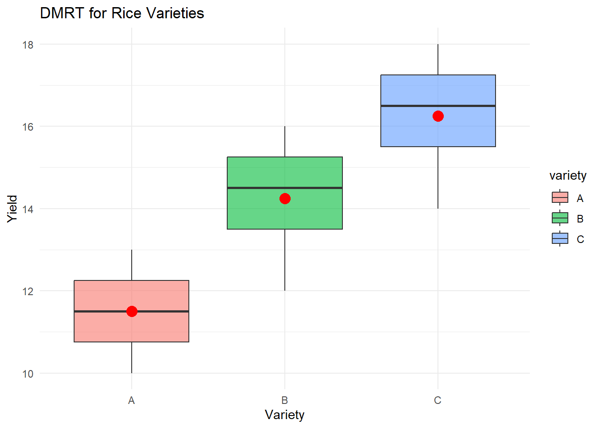

| variety | yield |
|---|---|
| A | 10 |
| A | 12 |
| A | 11 |
| A | 13 |
| B | 14 |
| B | 12 |
| B | 15 |
| B | 16 |
| C | 14 |
| C | 17 |
| C | 18 |
| C | 16 |
เลิกใช้ DMRT เถอะ
R
Duncan (DMRT) หลีกหนีเถอะ
#TL;DR:
DMRT ใช้เปรียบเทียบค่าเฉลี่ยแบบคู่ต่อคู่ เหมาะกับการทดลองง่ายที่มีปัจจัยเดียวและข้อมูลผ่านสมมติฐาน ANOVA แต่ไม่เหมาะกับการทดลองแฟกทอเรียลหรือตัวแปรต่อเนื่อง เพราะไม่รองรับ interaction และแนวโน้มเชิงปริมาณ DMRT เข้าใจง่ายแต่ “ใจดี” ไปหน่อย ควรใช้ Tukey’s HSD เมื่อต้องการคุมความผิดพลาดให้รัดกุมกว่า สรุปคือ DMRT ใช้ได้ ถ้าเราเข้าใจข้อจำกัดของมันดีพอ
เกริ่น
เวลาเราทำการทดลองที่มีหลายชุด เช่น เปรียบเทียบผลผลิตข้าวหลายพันธุ์ หรือดูผลของปุ๋ยหลายสูตร ขั้นตอนมาตรฐานหลังจาก ANOVA คือ “ถ้ามันแตกต่างกันจริง แล้วคู่ไหนต่างกันบ้าง?” หมาย ๆ หลาย เลือกใช้ DMRT เพื่อช่วยตอบ
DMRT เป็นการเปรียบเทียบค่าเฉลี่ยแบบ pairwise comparision เพื่อหาว่าคู่ไหนต่างกันอย่างมีนัยสำคัญ โดยใช้ค่า Least Significant Range (LSR) ซึ่งคำนวณจากจำนวนกลุ่ม ระดับความเชื่อมั่น และค่า Mean Square Error (MSE) ที่ได้จาก ANOVA
ถ้าคู่ไหนต่างกันเกิน LSR สรุปว่า “ต่างกันจริง” แต่ ถ้าค่างกันไม่ถึง ก็ “ยังไม่ต่างพอจะบอกว่าต่างกัน”
เมื่อไหร่ควรใช้ DMRT?
DMRT ใช้ได้ดีในงานทดลองที่มีโครงสร้างเรียบง่าย เช่น - กลุ่มทดลองเป็นอิสระต่อกัน - ตัวแปรอธิบายเป็นตัวแปรเชิงคุณภาพ (เช่น พันธุ์ข้าว, สูตรปุ๋ย, สภาพดิน) - ข้อมูลผ่านการตรวจสอบว่า “กระจายแบบปกติ” และ “มีความแปรปรวนเท่ากัน” DMRT เหมาะสมที่จะใช้ในสถานการณ์ต่อไปนี้
R example
จำลองตัวอย่างข้อมูลผลผลิตข้าว 3 สายพันธุ์
วิเคราะห์ ANOVA และ DMRT โดยใช้ duncan.test จาก agricolae package
# วิเคราะห์ ANOVA
model <- aov(yield ~ variety, data = data)
summary(model) Df Sum Sq Mean Sq F value Pr(>F)
variety 2 45.5 22.75 9.1 0.00689 **
Residuals 9 22.5 2.50
---
Signif. codes: 0 '***' 0.001 '**' 0.01 '*' 0.05 '.' 0.1 ' ' 1# ทดสอบ DMRT
duncan.test(model, "variety", console = TRUE)
Study: model ~ "variety"
Duncan's new multiple range test
for yield
Mean Square Error: 2.5
variety, means
yield std r se Min Max Q25 Q50 Q75
A 11.50 1.290994 4 0.7905694 10 13 10.75 11.5 12.25
B 14.25 1.707825 4 0.7905694 12 16 13.50 14.5 15.25
C 16.25 1.707825 4 0.7905694 14 18 15.50 16.5 17.25
Alpha: 0.05 ; DF Error: 9
Critical Range
2 3
2.529169 2.639820
Means with the same letter are not significantly different.
yield groups
C 16.25 a
B 14.25 a
A 11.50 bdata %>%
ggplot(aes(variety, yield)) +
geom_boxplot(aes(fill = variety), alpha = 0.6) +
stat_summary(fun = mean, geom = "point", color = "red", size = 4) +
labs(
title = "DMRT for Rice Varieties",
x = "Variety",
y = "Yield"
) +
theme_minimal()
ไม่ควรใช้ DMRT เมื่อ
1. การทดลองแฟกทอเรียล (factorial design)
ถ้ามีมากกว่า 1 ปัจจัย เช่น “ปุ๋ย × ระดับน้ำ” DMRT จะไม่รู้จัก interaction ของปัจจัยเหล่านั้น
2. ตัวแปรต้นเชิงปริมาณ (quantitative)
ถ้าปัจจัยเป็นค่าต่อเนื่อง เช่น “ปริมาณปุ๋ย (กก./ไร่)” การใช้ DMRT จะสูญเสียข้อมูล เพราะมันมองทุกระดับเป็นกลุ่มแยก ๆ กรณีนี้ควรใช้ Regression analysis มากกว่า
DMRT vs Tukey’s HSD
DMRT มีแนวโน้ม “ใจดีเกินไป” คือยอมให้หลายคู่ต่างกันได้ง่าย (Type I error สูงกว่า)
ถ้าเรามีกลุ่มมาก หรืออยากคุมความผิดพลาดให้แน่นหนา และ Tukey’s HSD มักเป็นทางเลือกที่ดีกว่า